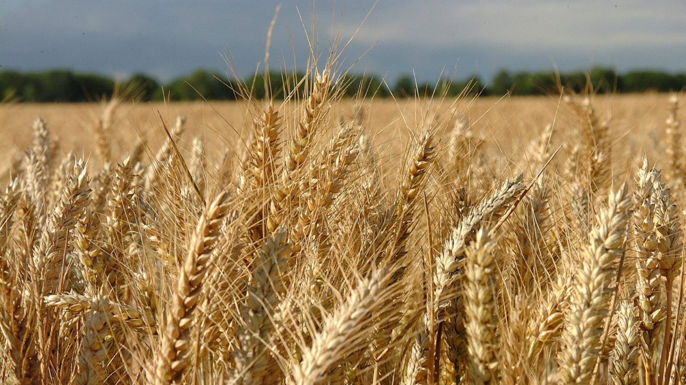
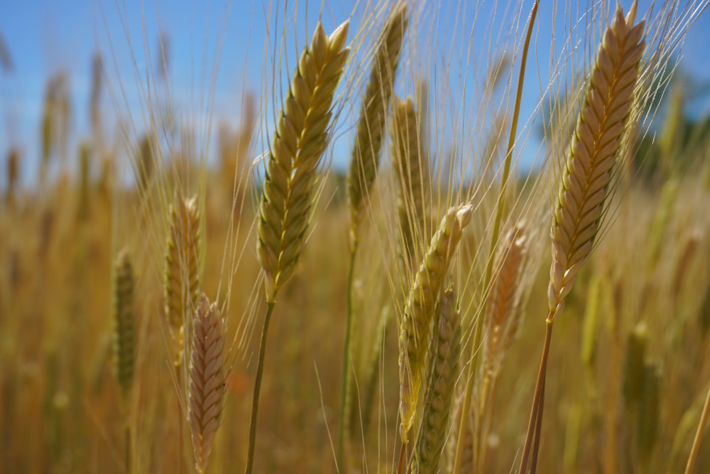
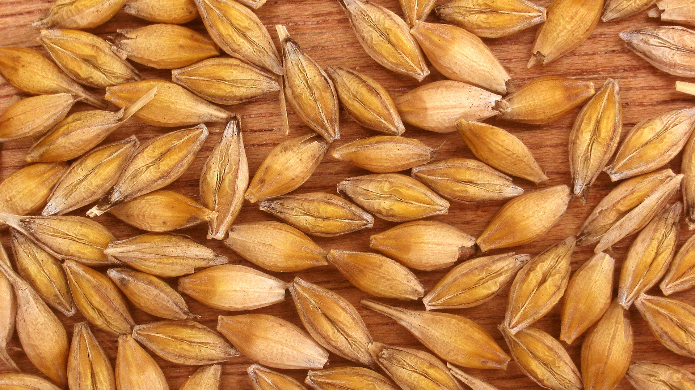
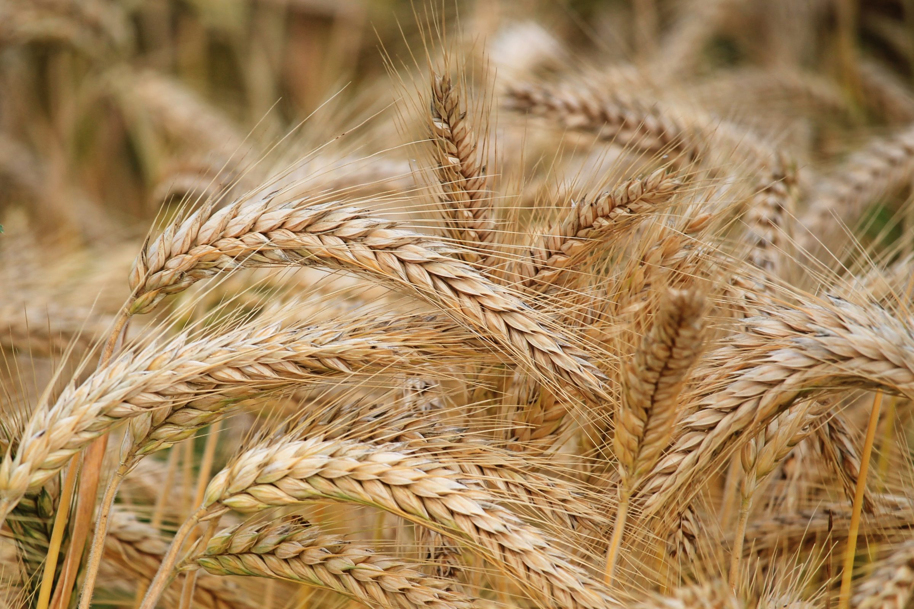
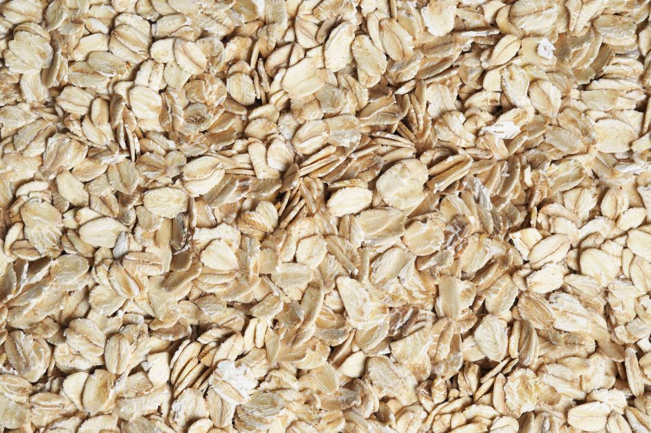
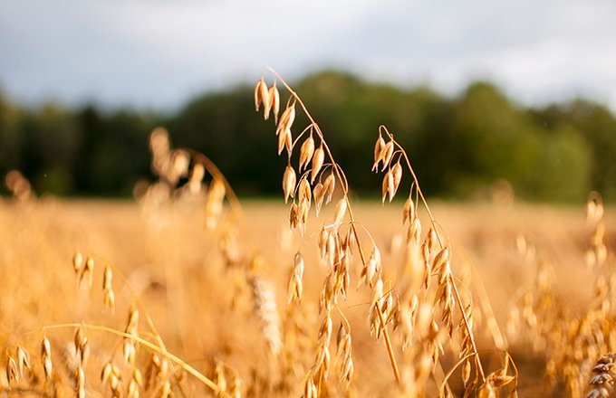

Découvrez des informations essentielles sur les céréales et leurs maladies.
Le blé est sujet à diverses maladies qui impactent la qualité des récoltes.
L'orge peut être touchée par des maladies fongiques graves comme le charbon.
Un diagnostic rapide est essentiel pour préserver les cultures d'avoine.
Un entretien soigné et régulier des plantes est essentiel pour prévenir les maladies et garantir leur développement optimal. Découvrez pourquoi il est crucial d'assurer la propreté et la santé de vos cultures.
Maintenir vos plantes propres permet de réduire considérablement les risques d'infection par des champignons, bactéries ou insectes nuisibles. Une plante saine est mieux armée pour résister aux agressions extérieures.
Une plante débarrassée de la poussière, des débris et des maladies bénéficie d'une meilleure absorption de la lumière et des nutriments. Cela favorise sa croissance et augmente son rendement.
Entretenir vos cultures contribue à un équilibre écologique sain. Des plantes propres réduisent l'utilisation excessive de traitements chimiques tout en soutenant la biodiversité locale.
des maladies des céréales sont causées par des champignons.
d'hectares de blé cultivés dans le monde.
de pertes agricoles évitées grâce à des diagnostics précoces.





